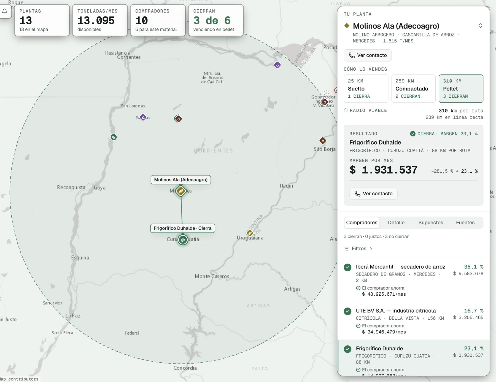
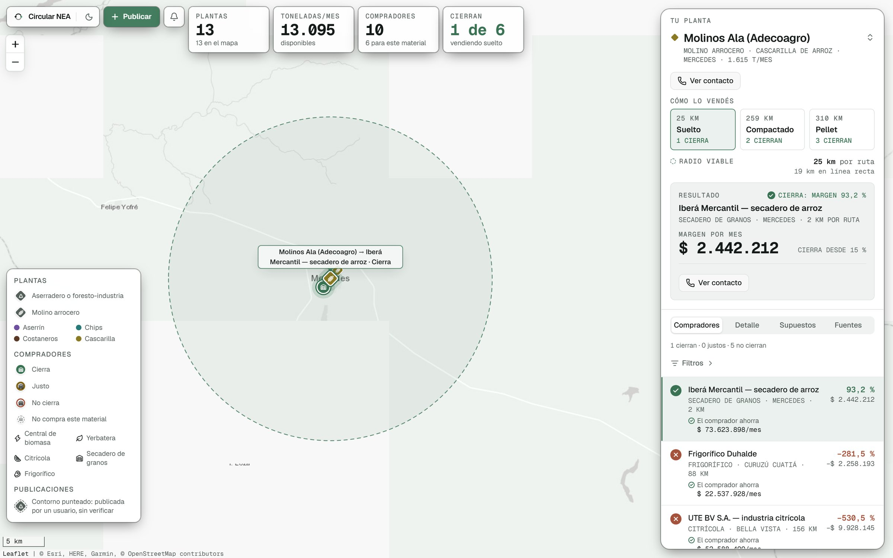
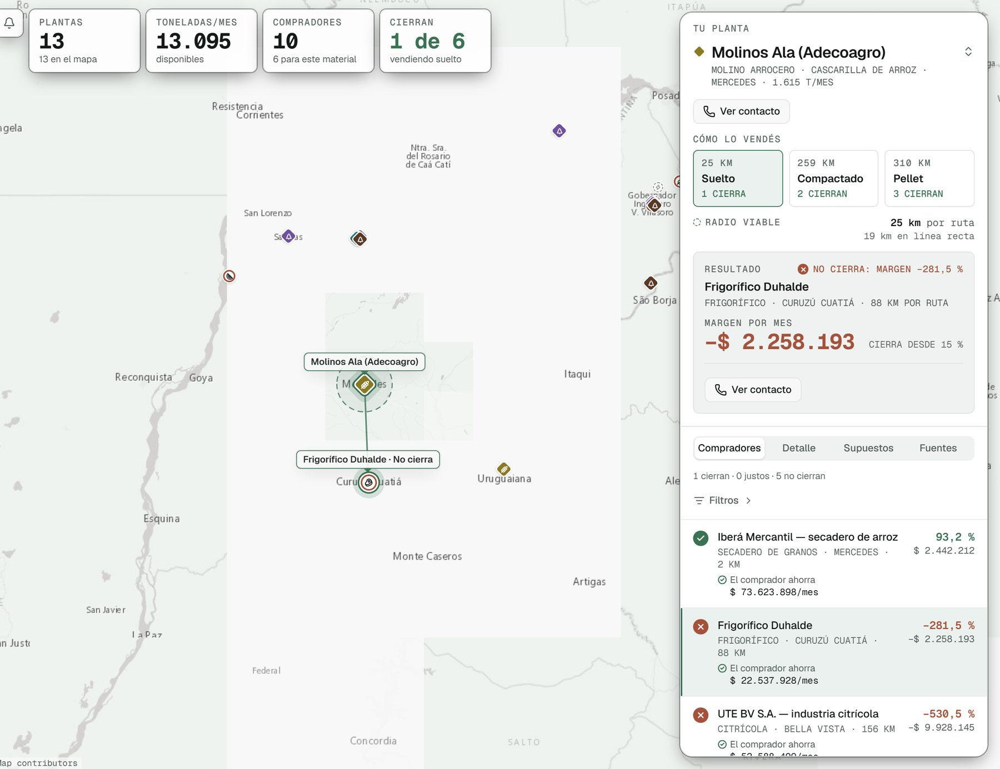
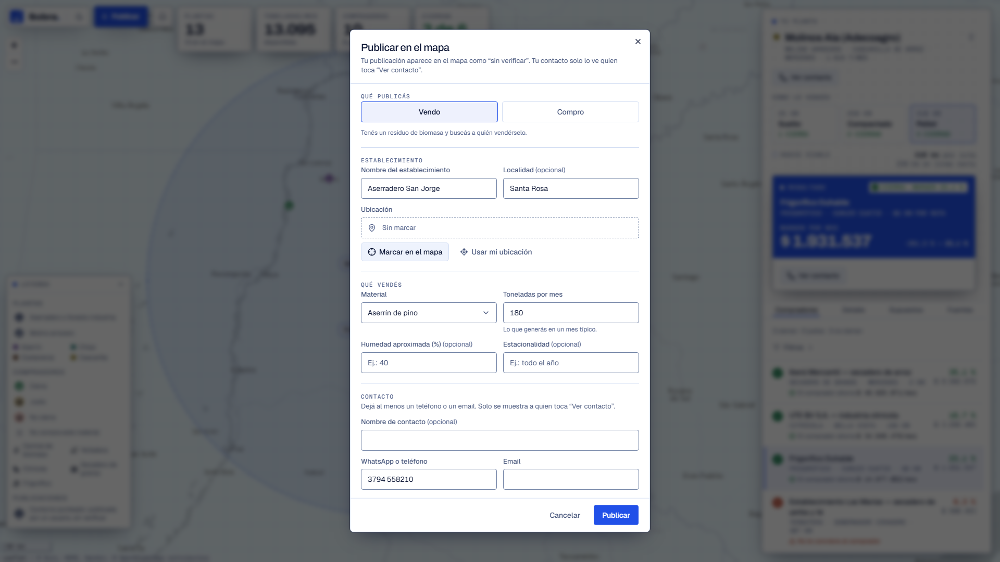
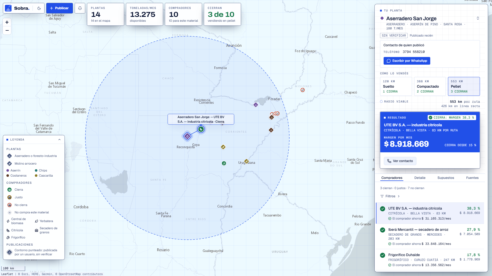
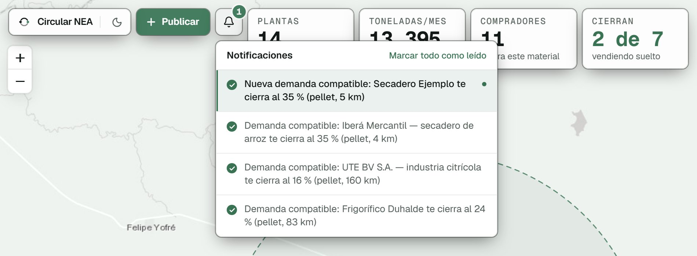
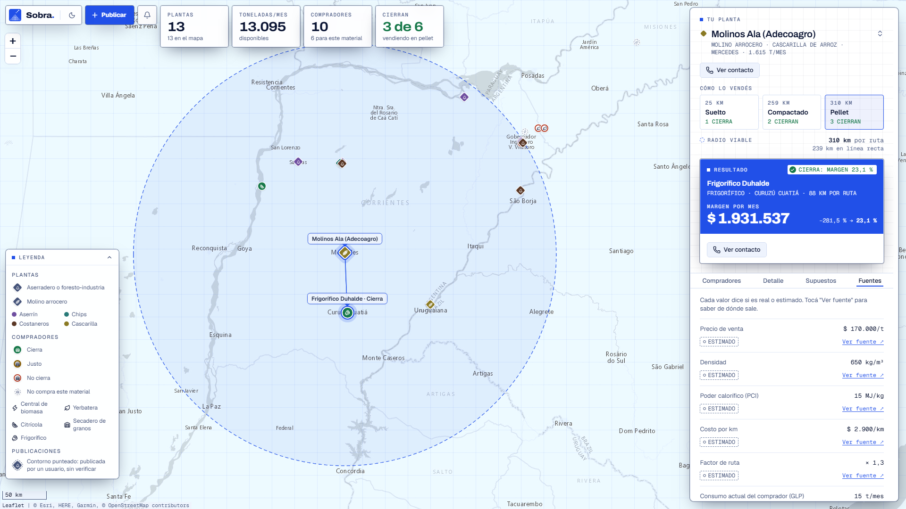

Circular NEA
Que el residuo deje de ser un costo y se vuelva un ingreso
Que el residuo deje de ser un costo y se vuelva un ingreso
Ideathon NEA Tech 2026 · Desafío 03
Del subproducto al mercado
Equipo 13

El problema
del arroz del país lo produjo Corrientes en la campaña 2025/26
Realforestadas: la primera provincia forestal de la Argentina
Realde cascarilla por año con origen en el arroz correntino (140.000 a 157.000 t)
EstimadoY ademásSolo en el parque foresto-industrial de Santa Rosa se estimaban 200.000 t/año de residuos de aserradero que se queman.
Fuentes: Bichos de Campo (producción de arroz 2025/26) · CONICET (inventario forestal 2019) · El Inversor Energético (proyecto Genergiabio) · Estimación propia: ~714.000 t de arroz × 20 a 22 % de cascarilla
02 / 14Por qué pasa
No faltan usos: energía, pellets, sílice, sustratos. Faltan tres cosas.
El que tiene el residuo no sabe quién lo necesita ni dónde está.
Nadie calcula si la venta cierra después de pagar el camión.
Un aserradero chico, solo, no llena un camión ni firma un contrato.
Un camión de cascarilla suelta
108kg/m³
El camión se llena de aire antes que de peso.
Con los supuestos del modelo, suelta conviene hasta ~25 km. En pellet, hasta ~310 km.
Densidad 108 kg/m³: Dyna, UNAL · Carga útil 30 t: Ley 24.449 · Caja de 90 m³ (estimado) · Pellet a granel 650 kg/m³: DINplus
03 / 14A quién le resolvemos
Molinos arroceros y aserraderos
Venden lo que hoy queman o tiran, y dejan de pagar por sacarlo.
Frigoríficos, citrícolas, secaderos y yerbateras con GLP o leña
Bajan la factura de GLP con un combustible local, con el ahorro calculado.
Ministerio de Producción
Ve oferta, demanda e impacto en un tablero para decidir qué financiar.
La solución

Captura real de la app · Demo: ideathon-agro-9u3t-flax.vercel.app
05 / 14El momento clave · ejemplo del modelo con supuestos estimados

El comprador ve cuánto ahorra frente a su combustible actual.
Ejemplo del modelo con supuestos estimados: flete FETRA abril 2026, GLP febrero 2026, precios de pellet y cascarilla estimados. No son resultados de las empresas de la captura.
06 / 14Publicar · contactar · enterarse

01Publicás en un minuto. Vendo o Compro, un click en el mapa y un teléfono.

02El contacto, con un click. Y el WhatsApp ya armado.

03Te avisa cuando aparece un negocio compatible. La campanita muestra el match, el margen y la distancia.
Sin verificar, pero a la vista
Toda publicación entra marcada “sin verificar” y con límite por conexión. La verificación por CUIT es el siguiente paso.
Capturas reales de la app · “Molino Ejemplo” es una publicación de prueba cargada para mostrar el flujo
07 / 14Datos en los que se puede confiar
No vendemos humo. El pellet le gana al GLP, no a la leña barata, y la app lo dice.

Captura real: pestaña Fuentes de la app
08 / 14Qué cambia
| Hoy | Con Circular NEA | |
|---|---|---|
| Quién compra | ×De boca en boca, si alguien conoce a alguien | ✓Mapa con compradores reales y publicaciones abiertas |
| ¿Cierra? | ×A ojo, o no se calcula | ✓Margen después del flete, con semáforo |
| Hasta dónde | ×Al vecino, o no se vende | ✓Radio viable por estado: 25 km suelto, 310 km en pellet |
| Para el comprador | דEs más barato”, sin número | ✓Ahorro mensual concreto frente a su GLP o leña |
| Contacto | ×Llamadas y conocidos | ✓Ver contacto y WhatsApp en un click |
| Novedades | ×Nadie avisa | ✓Aviso cuando aparece un negocio compatible |
Impacto potencial · escenario estimado
de pellet de cascarilla que hoy no existe en el mercado
de GLP que dejan de quemarse en la industria
de CO2 fósil evitadas
Base del cálculo Estimado
10 % de ~140.000 t/año de cascarilla (estimación propia). 1 t de pellet reemplaza ~305 kg de GLP por energía útil. ~0,9 t de CO2 evitadas por t de pellet (GLP: ~3,0 kg CO2/kg, IPCC 2006). Supone que todo el pellet reemplaza GLP: es un orden de magnitud, no una proyección.
Qué valida el piloto
Los volúmenes y la demanda de cada empresa son estimados. El piloto los reemplaza por datos reales de generadores y compradores.
IPCC 2006 Guidelines, Vol. 2, Cap. 2 · Poderes caloríficos: Forest Research UK · Cálculo propio
10 / 14Tecnología y por qué
Web · React, Vite, Tailwind, shadcn/ui, Leaflet
Sin instalar nada. Mapa interactivo, tema claro y oscuro.
API · Hono en Cloudflare Workers
Escala sola, sin administrar servidores.
Datos · PostgreSQL + Drizzle
Cualquier Postgres estándar: local, Neon, Supabase o RDS.
Un mismo motor de cálculo
Las mismas funciones calculan en el navegador y en la API: no hay dos versiones de la verdad.
Tests automáticos
Pruebas del cálculo y recorridos completos en el navegador, incluido el guion de la demo.
Código abierto, licencia MIT
11 / 14Modelo de negocio
01 · Freemium
Se pagan la calculadora avanzada, las alertas, la ficha técnica y el pool de suministro.
Generadores y compradores activos
02 · Comisión
Sobre la primera operación o el contrato anual de cada match.
Compradores de calor
03 · Licencia provincial
Oferta, demanda, GLP sustituido y CO2 evitado, con datos agregados.
Gobierno de Corrientes
Referencia: Excess Materials Exchange (Países Bajos) cobra €99 por mes más un fee por match. También: comisión por derivar clientes a laboratorios y fleteros.
Fuente de la referencia: Sitra, caso Excess Materials Exchange
12 / 14Supuestos, limitaciones y siguiente paso
Hoy es estimado
Piloto de 30 a 60 días
Criterio de éxito
Al menos 3 matches en verde con precios reales, 1 carta de intención firmada y 5 generadores y 5 compradores con datos propios.
Dato de molienda: BCR, 2016 (dato viejo, se actualiza en el piloto)
13 / 14Que un residuo deje de ser un costo y se vuelva un ingreso, con números que lo demuestren.
Lo que pedimos: cinco aserraderos y dos molinos para el piloto.

Probala ahora
ideathon-agro-9u3t-flax.vercel.app
Equipo
Equipo 13
Uso de IA: Idea, problema y funcionalidades: Equipo 13. Programación con asistencia de IA (Claude Code) bajo dirección del equipo. Sin datos simulados: datos reales con fuente y estimaciones marcadas. Componentes previos: no aplica (no reutilizamos desarrollos propios anteriores).
Demo: https://ideathon-agro-9u3t-flax.vercel.app/
14 / 14